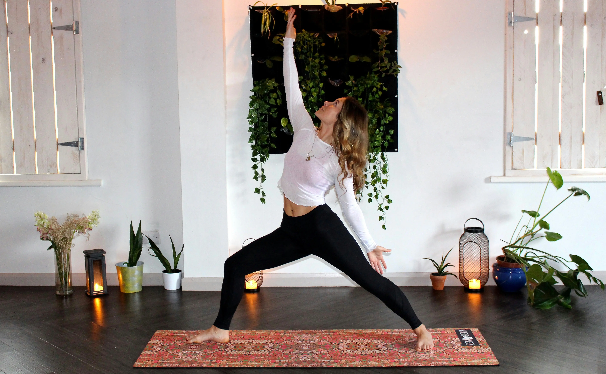

The Benefits of Yoga
Yoga is so much more than stretching. A consistent yoga practice improves flexibility, builds functional strength, reduces stress, enhances body awareness, and promotes better sleep. Whether you're a total beginner or someone looking to add mobility work to your fitness routine, yoga is one of the most beneficial things you can do for your body and mind.

Beginner Poses to Start With
- Child's Pose (Balasana) — A gentle resting pose that stretches the hips, thighs, and lower back.
- Downward-Facing Dog (Adho Mukha Svanasana) — Stretches the hamstrings, calves, and spine while building arm strength.
- Warrior I (Virabhadrasana I) — Strengthens the legs and opens the hips and chest.
- Cat-Cow (Marjaryasana-Bitilasana) — Gentle spinal movement that warms up the back and improves posture.
- Seated Forward Fold (Paschimottanasana) — Deeply stretches the hamstrings and lower back.
- Corpse Pose (Savasana) — Final relaxation pose. Allows the body to absorb the benefits of your practice.
10-Minute Morning Flow (Video)
Start your day with this gentle 10-minute yoga routine — perfect for beginners and ideal for waking up your body before work or school:
Weekly Yoga Practice Schedule
| Day | Practice Type | Duration | Focus |
|---|---|---|---|
| Monday | Morning Flow | 10–15 min | Wake up & energize |
| Wednesday | Full Beginner Session | 30 min | Flexibility & strength |
| Friday | Evening Wind-Down | 20 min | Stress relief & relaxation |
| Sunday | Restorative Yoga | 30–45 min | Deep stretch & recovery |
Tips for Starting a Yoga Practice
- You don't need to be flexible to start yoga — flexibility is the result, not the requirement.
- Use props like blocks, straps, or a folded blanket to make poses more accessible.
- Focus on your breath — if you lose your breath, you've pushed too far.
- Practice consistently rather than intensely. Even 10 minutes a day adds up.
- Check out Yoga with Adriene on YouTube — a fantastic free resource for all levels.